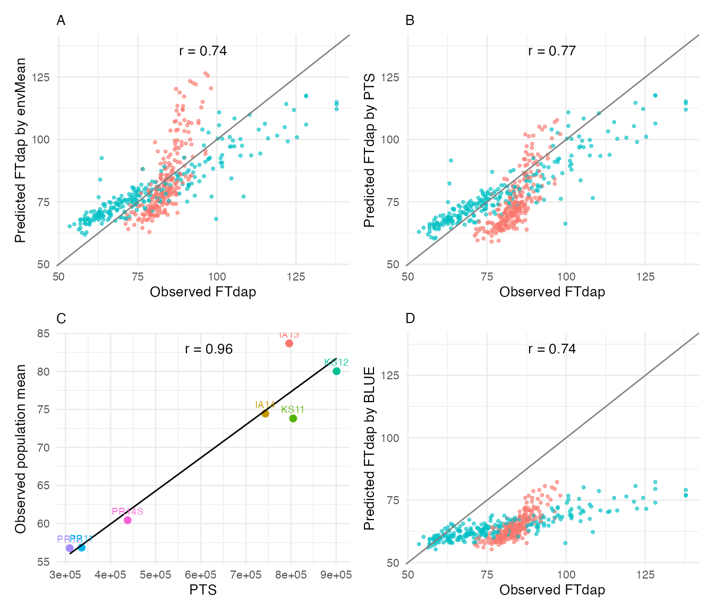

Genomic Prediction (JGRA)
genomic-prediction.RmdOverview
Genomic prediction integrates marker data with environmental covariates to predict genotype performance in untested environments. CERIS provides two complementary approaches through the JGRA (Joint Genomic Regression Analysis) framework:
Reaction norm approach (
jgra()): Models genotype-by-environment interaction as a function of genomic breeding values and their interaction with an environmental covariate. The reaction norm captures how each genotype’s performance changes along the environmental gradient identified by CERIS.Marker effect approach (
jgra_marker()): Estimates marker-specific sensitivity to the environmental covariate. Rather than summarizing genomic information into a single breeding value, this approach models individual marker effects and their interactions with the environment.
Both methods leverage the CERIS-identified critical environmental parameter (kPara) to define the environmental gradient, replacing the traditional environmental mean with a biologically interpretable covariate.
This vignette demonstrates how to:
- Prepare the required inputs for JGRA from a standard CERIS pipeline.
- Run genomic prediction using the reaction norm and marker effect approaches.
- Evaluate prediction accuracy with different cross-validation schemes.
- Forecast performance in new environments using
forecast_next_year().
Data Setup
Load the sorghum dataset and run the standard CERIS pipeline through
compute_window_params(). This produces the kPara column
needed for JGRA.
library(runCERIS)
d <- load_crop_data("sorghum")
exp_trait <- prepare_trait_data(d$traits, "FTdap")
env_mean_trait <- compute_env_means(exp_trait, d$env_meta)Run the CERIS exhaustive search to identify the best environmental window:
params <- c("DL", "GDD", "PTT", "PTR", "PTS")
ceris_result <- run_CERIS(
env_mean_trait = env_mean_trait,
env_params = d$env_params,
params = params,
max_days = 80,
loo = FALSE,
progress = NULL
)
best <- ceris_identify_best(ceris_result, params = params)
best
#> $param_name
#> [1] "PTS"
#>
#> $dap_start
#> [1] 9
#>
#> $dap_end
#> [1] 16
#>
#> $correlation
#> [1] 0.9587
#>
#> $neg_log_p
#> [1] 3.1866Compute the window-summarized environmental parameter for each environment:
env_mean_trait <- compute_window_params(
env_mean_trait = env_mean_trait,
env_params = d$env_params,
dap_start = best$dap_start,
dap_end = best$dap_end,
params = best$param_name
)
head(env_mean_trait)
#> env_code meanY env_notes lat lon PlantingDate TrialYear Location
#> 1 PR12 56.77317 2 18.0373 -66.7963 2011-12-12 2011 PR
#> 2 PR11 56.85371 1 18.0373 -66.7963 2010-12-04 2010 PR
#> 3 PR14S 60.45186 7 18.0373 -66.7963 2014-06-05 2014 PR
#> 4 KS11 73.81378 3 39.1836 -96.5717 2011-06-08 2011 KS
#> 5 IA14 74.44027 6 42.0308 -93.6319 2014-06-10 2014 IA
#> 6 KS12 80.02100 4 39.1836 -96.5717 2012-06-07 2012 KS
#> kPara
#> 1 309321.4
#> 2 335746.3
#> 3 437819.6
#> 4 804678.1
#> 5 742952.3
#> 6 900995.8Preparing JGRA Inputs
The jgra() and jgra_marker() functions
require three primary inputs:
-
pheno: A wide-format data frame with
line_codein the first column and one column per environment containing trait values. This is the output ofprepare_line_by_env(). -
geno: A data frame with
line_codeas the first column followed by marker columns. This must be constructed from the genotype matrix. -
envir: A data frame with
env_codeand the environmental parameter column to use as the covariate.
# Wide-format phenotype matrix
pheno <- prepare_line_by_env(exp_trait, env_mean_trait)
head(pheno[, 1:4])
#> line_code PR12 PR11 PR14S
#> 1 E10 53.1187 53.4805 82.8025
#> 2 E100 60.0257 66.6417 64.0564
#> 3 E101 56.9559 58.7449 65.3437
#> 4 E102 56.5722 54.3579 60.0090
#> 5 E103 53.8861 54.7966 77.9528
#> 6 E104 56.5722 53.4805 64.8587
# Genotype data frame with line_code as first column
geno_df <- data.frame(
line_code = rownames(d$genotype),
d$genotype,
check.names = FALSE
)
geno_df[1:5, 1:5]
#> line_code E5 E6 E7 E8
#> S1_1857181 S1_1857181 1 1 -1 1
#> S1_1857180 S1_1857180 1 1 -1 1
#> S1_1857182 S1_1857182 1 1 -1 1
#> S1_1857183 S1_1857183 1 1 -1 1
#> S1_1857184 S1_1857184 1 1 -1 1
# Environmental covariate
envir <- env_mean_trait[, c("env_code", "kPara")]
envir
#> env_code kPara
#> 1 PR12 309321.4
#> 2 PR11 335746.3
#> 3 PR14S 437819.6
#> 4 KS11 804678.1
#> 5 IA14 742952.3
#> 6 KS12 900995.8
#> 7 IA13 795978.4The envir data frame links each environment to its kPara
value — the CERIS-identified environmental covariate summarized over the
critical window. This replaces the traditional environmental mean with a
parameter that has a direct biological interpretation (e.g., cumulative
photoperiod during the sensitive developmental period).
Reaction Norm Approach
The jgra() function fits a reaction norm model that
decomposes genotype performance into a main genetic effect (breeding
value) and a genotype-specific sensitivity to the environmental
covariate. The method argument controls the
cross-validation scheme:
-
"RM.E": Leave-one-environment-out — predicts performance in environments excluded from training. -
"RM.G": K-fold genotype cross-validation — predicts performance of genotypes excluded from training. -
"RM.GE": Combined — simultaneously excludes genotypes and environments.
We start with environment leave-one-out (RM.E), using
fold = 5 and reshuffle = 2 for faster
computation in this vignette:
jgra_result <- jgra(
pheno = pheno,
geno = geno_df,
envir = envir,
enp = "kPara",
env_meta = d$env_meta,
method = "RM.E",
fold = 5,
reshuffle = 2,
progress = NULL
)The result contains prediction accuracy metrics:
# Within-environment correlation
jgra_result$r_within
#> cor_within envir
#> 1 -0.09051804 PR12
#> 2 -0.20731434 PR11
#> 3 0.84652584 PR14S
#> 4 0.57745974 KS11
#> 5 0.44517081 IA14
#> 6 0.85891930 KS12
#> 7 0.82833064 IA13
# Across-environment correlation
jgra_result$r_across
#> [1] 0.3274092
# Prediction data frame
head(jgra_result$predictions)
#> obs pre envir
#> 1 53.1187 72.18935 PR12
#> 2 60.0257 67.23481 PR12
#> 3 56.9559 68.09015 PR12
#> 4 56.5722 62.18671 PR12
#> 5 53.8861 84.15024 PR12
#> 6 56.5722 78.80609 PR12The r_within value measures how well the model predicts
genotype rankings within each environment, while r_across
captures prediction accuracy across all observations. The
predictions data frame contains observed (obs)
and predicted (pre) values along with environment
identifiers.
Marker Effect Approach
The jgra_marker() function uses the same interface but
estimates marker-specific environmental sensitivities rather than
summarizing genomic information into a single breeding value. This
approach can capture more complex patterns of GxE when individual
markers have differential sensitivity to the environmental
covariate:
marker_result <- jgra_marker(
pheno = pheno,
geno = geno_df,
envir = envir,
enp = "kPara",
env_meta = d$env_meta,
method = "RM.E",
fold = 5,
reshuffle = 2,
progress = NULL
)Compare the marker effect results with the reaction norm approach:
comparison <- data.frame(
Method = c("Reaction Norm (jgra)", "Marker Effects (jgra_marker)"),
r_within = c(jgra_result$r_within, marker_result$r_within),
r_across = c(jgra_result$r_across, marker_result$r_across)
)
comparisonNote: jgra_marker() requires datasets with sufficient
genotype matrix dimensions. The sorghum example dataset is too small for
the marker effect method. With larger datasets (e.g., hundreds of lines
and thousands of markers), both methods run successfully and can be
directly compared.
In many cases the two methods yield similar accuracy for
environment-level prediction (RM.E), but the marker effect
approach may outperform the reaction norm model when predicting untested
genotypes (RM.G or RM.GE), since it models
marker-level heterogeneity in environmental sensitivity.
Forecasting New Environments
The forecast_next_year() function provides a direct way
to evaluate how well the model predicts performance in environments
excluded from training. This simulates a practical breeding scenario
where historical data from existing trial sites is used to predict
outcomes at new locations or in future years.
We use the first five sorghum environments as training and hold out the remaining environments as the test set:
train_envs <- env_mean_trait$env_code[1:5]
test_envs <- setdiff(env_mean_trait$env_code, train_envs)
cat("Training environments:", paste(train_envs, collapse = ", "), "\n")
#> Training environments: PR12, PR11, PR14S, KS11, IA14
cat("Test environments: ", paste(test_envs, collapse = ", "), "\n")
#> Test environments: KS12, IA13
forecast_result <- forecast_next_year(
exp_trait = exp_trait,
env_mean_trait = env_mean_trait,
trn_env = train_envs
)Visualize the forecast results with
plot_prediction_result(), which produces a four-panel
display showing observed versus predicted values, prediction by
environment, and the relationship with kPara:
plot_prediction_result(
obs_prd = forecast_result,
env_mean_trait = env_mean_trait,
trait = "FTdap",
kpara_name = best$param_name
)
The top-left panel shows observed versus predicted trait values colored by environment. The top-right panel displays predictions against the environmental mean. The bottom panels show the relationship with the CERIS-identified environmental parameter. Points close to the diagonal indicate accurate predictions.
Choosing the Right Method
The following table summarizes when to use each genomic prediction approach:
| Scenario | Recommended Method | Rationale |
|---|---|---|
| Predict performance in a new environment (new location or year) |
jgra() with method = "RM.E"
|
Environment LOO directly evaluates the target scenario. Reaction norm is efficient and interpretable. |
| Predict untested genotypes in known environments |
jgra_marker() with method = "RM.G"
|
Marker effects capture genotype-specific environmental sensitivity more accurately than a single breeding value. |
| Predict untested genotypes in new environments |
jgra_marker() with method = "RM.GE"
|
The most challenging scenario benefits from the richer marker-level model. |
| Quick assessment with limited markers |
jgra() with method = "RM.E"
|
The reaction norm approach is less sensitive to marker density and runs faster. |
| Large marker panels with known QTL | jgra_marker() |
Marker-specific effects can better leverage known causal variants. |
For all methods, the prediction quality depends critically on the CERIS-derived kPara providing a meaningful environmental gradient. A strong CERIS result (high R-squared in the heatmap) translates directly into better genomic prediction accuracy.
Alternative GP Method: BayesB
Both jgra() and jgra_marker() accept a
gp_method parameter to switch between rrBLUP (default,
ridge regression BLUP) and BayesB (Bayesian variable selection via
BGLR). BayesB assigns marker-specific shrinkage, allowing some markers
to have large effects while shrinking others to near zero — useful when
the trait architecture involves few large-effect QTL.
To use BayesB, install the BGLR package and set
gp_method = "BayesB":
# install.packages("BGLR")
jgra_bayesb <- jgra(
pheno = pheno,
geno = geno_df,
envir = envir,
enp = "kPara",
env_meta = d$env_meta,
method = "RM.G",
gp_method = "BayesB",
nIter = 5000,
burnIn = 1000,
seed = 42,
fold = 5,
reshuffle = 2
)
jgra_bayesb$r_acrossBayesB is computationally more expensive than rrBLUP due to MCMC
sampling. For exploratory analyses, reduce nIter and
burnIn. For publication-quality results, use
nIter >= 10000 and burnIn >= 2000.
The seed parameter ensures reproducible results across
runs — this applies to both BayesB MCMC sampling and the random fold
assignments used in cross-validation.
The same gp_method and seed parameters are
available in cv_genotype() and
cv_combined():
cv_result <- cv_genotype(
gFold = 5, gIteration = 2,
SNPs = SNPs, lm_ab_matrix = lm_ab,
env_mean_trait = env_mean_trait, exp_trait = exp_trait,
gp_method = "BayesB", nIter = 5000, burnIn = 1000, seed = 42
)Summary
This vignette demonstrated the two JGRA approaches for genomic prediction in CERIS:
-
Reaction norm (
jgra()): Models breeding values and their interaction with kPara. Efficient, interpretable, and well-suited for environment-level prediction. -
Marker effects (
jgra_marker()): Models individual marker sensitivities to kPara. More flexible for genotype-level prediction. -
Forecasting (
forecast_next_year()): Evaluates prediction accuracy in a practical train/test split scenario.
Both approaches integrate the CERIS-identified critical environmental
window, connecting the environmental search results directly to genomic
prediction. For crops without genotype data, see
vignette("multi-crop-examples") for alternative analysis
strategies.